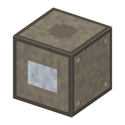

説明
①子ども とても正確なねじで少しずつ送りながら、ダイヤモンドで鏡に細い溝を何万本も刻む機械。
②学生 送りねじ×2＋定盤＋モーター＋鉄×5。電気 300W・60秒。鏡（スペキュラムか銀鏡）＋ダイヤモンド（減らない）＋送りねじ（減らない）→ 刻線した回折格子（1mm に 600 本）。刻み終わりに床が揺れていたり、空調がなく温度が変わったりすると、にせの線（ゴースト）が出る格子になる。
③大人 1882年、ジョンズ・ホプキンス大学のローランドは、自分で磨き上げたねじで 1mm に数百本の溝を刻む刻線機を作り、凹面回折格子を世界に送り出した。一枚刻むのに何日もかかり、その間に温度が少し変わるだけで失敗した。
④ガチ ねじの小さなくせが周期的に溝の間隔をずらすと、本物の線の横に「ゴースト」と呼ばれるにせの線が出る。だから刻線機は地下の温度の変わらない部屋に置かれた。1775年ラムズデンの目盛り刻み機（円の目盛りを正確に刻む）も同じ技術の先祖。
作り方
使い道
（このアイテムを使うレシピは無い）